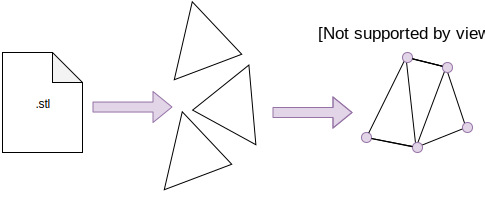
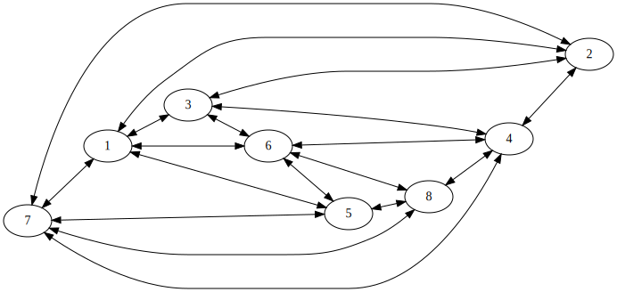
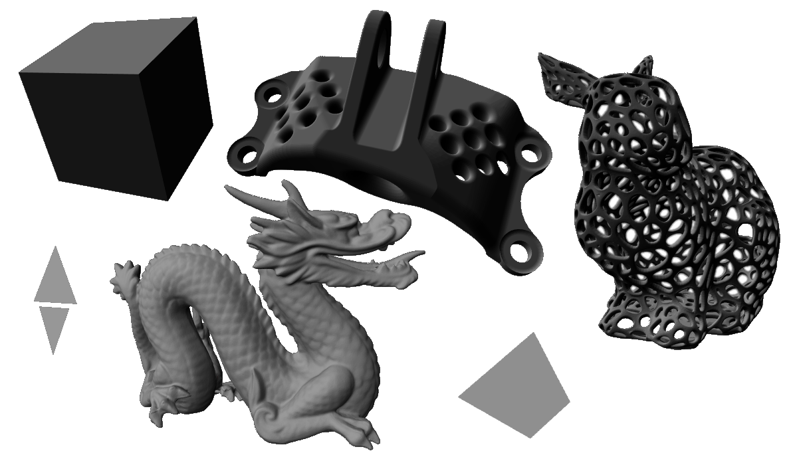
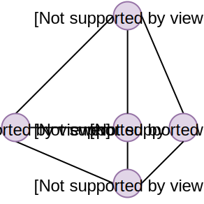
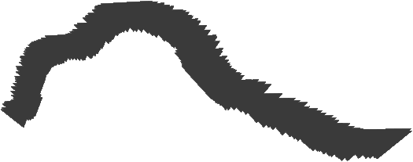

Materialise Internship Task
Emile Sonneveld, emile.sonneveld@vub.be
February 4, 2019
This report is accompanied by the following GIT repository: https://github.com/EmileSonneveld/pathfinding_on_stl
Report
The program parses a STL file and finds the shortest path between 2 points on this mesh.
First, the STL file will be converted to an internal format to work with. Then Dijkstra is applied on this algorithm.
Special attention is made to the time complexity of the algorithm.
Conversion from STL to internal representation
The STL format is a collection of triangles, where each triangle has 3 vertices. Those vertices are a triple of 3 floating point values. Dijkstra needs connectivity information between vertices, so we convert to a more appropriate format first.
When converting, the program will first go over all the triangles, and put its vertices in a std::map. So when the same coordinate is encountered twice, it will map to the same vertex representation. Meanwhile, a link between neighbor vertices is made. This link provides the required connectivity information.
This conversion happens in O(t * log(v)) Where t is the number of triangles, and v is the number of vertexes.
Visual overview of the conversion:

A visualization of cube_graph.stl in the converted format:

(Visualized with Graphviz)
Dijkstra in detail
In our internal representation, we already reserved some fields to store the distance from start and the previous element in the shortest path to the root. By default, they respectively are positive infinite and nullptr.
Dijkstra keeps a list of all vertices and how close they are to the start vertex. By default, each vertex will have a distance infinite. Only the start vertex will have 0.
From this list, we always take the vertex with the smallest distance from the start and calculate the distance their neighbors will have. When the algorithm reaching a neighbor for the second time, he will check if this time it found a more optimal distance, and if so, will update the neighbor again. The way the algorithm works, will assure that this neighbor vertex is still in the list, and will only be processed when there is no chance that it will be updated again.
At some point, the goal vertex will be taken from the list. Then the distance to the goal node will be the correct one and can be returned as a result.
To calculate the path between start and goal, each vertex will keep a link to what neighbor was responsible for giving it it's smallest distance from start. This will technique will keep a linked list from each processed vertex to the start vertex. For vertices that are not in the open list anymore, we know that this path will be the shortest one. So, when it removes the goal node from the open list, the shortest path has been found.
To make this process more performant, a heuristic can be added to put priority on vertexes that are more promising to reach the goal faster. The heuristic can be implemented by taking the Euclidean distance to the goal point. This would be A*.
As an implementation detail, the open-list has been implemented with a heap. The heap allows to take a vertex with the smallest distance while not needing to keep all elements sorted. Inserting and removing an element in this heap happens in O(log(n)). Special functionality is implemented to keep the internal structure of the heap valid while changing values in vertices.
The complexity of the Dijkstra is depending and on searching the next vertex to process and the actual processing of this vertex. In the first part, we have a complexity of O(v * log(v)). And for the second part O(m * log(v)), where m=e/v or the mean number of neighbors per vertex. After adding those up, we can work out the math to get the total complexity of the algorithm.
O(v * log(v) + (e/v) * log(v)) <=> O((v+e) * log(v))
The code
For parsing the binary STL files, the following library was used: https://github.com/dillonhuff/stl_parser (MIT license)
Please note that in this project, when referring to STL, we refer to the 3d file format and not the c++ Standard Template Library.
The code was written in Visual Studio Community 2017
Testing
- 3 small STL models where used to test the validity of the algorithm.
- 3 bigger STL models where used to test the performance of the algorithm.
The STL models, and the visualizations of their found path are added to the git repository.
The STL test models:

A visualization of test_mesh

Validity: test_mesh.stl: Between 0 and 4, the shortest path is 0~3~4.
Validity: Box1x1x1.stl: Between 2 extreme corner vertexes, multiple paths could be chosen. Dijkstra will take the first it encounters.
Validity: separated_triangles.stl: No path should be found between vertexes of the 2 different triangles.
Performance: stanford_dragon_flat_base.stl: The path on this model is tested by outputting the path to a new STL file and visually inspecting it. A screenshot of this path looks as follows:
